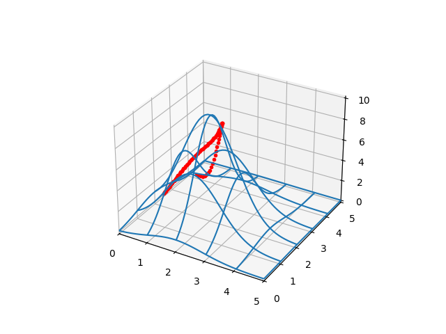

Yükseklik Fonksiyonu (Tepeler) Arasından En Düz, Optimal Yürüyüş Yolunu Bulmak
Elimizde bir alan içindeki yükseklikleri veren bir fonksiyon $f(x,y)$ olduğunu düşünelim. Acaba verili bir başlangıç ve bitiş noktası arasındaki en "rahat" gidiş yolunu nasıl buluruz?
Yükseklikler bir $E(x,y)$ fonksiyonunda olsun. Yolları nasıl temsil ederiz? Bir parametrik eğri kullanabiliriz, mesela
$$ x(t) = a_0 + a_1 t + a_2 t^2 + a_3 t^3 + a_4 t^4 $$
$$ y(t) = b_0 + b_1 t + b_2 t^2 + b_3 t^3 + b_4 t^4 $$
İstediğimiz derecede polinom parametrize eğrileri nasıl yaratacağımızı biliyoruz [3]. Böylece doğru, optimal bir yolu bulmak demek $a_0,a_1,a_2,a_3,b_0,b_1,b_2,b_3$ katsayılarını doğru bulmak demek olacaktır. Bir optimizasyon problemi yani.
Peki o zaman optimize, minimize edilecek bedel fonksiyonu ne olmalı? Burada farklı yaklaşımlar olabilir.
Önce yükseklikleri ve eğrileri iki örnek üzerinde görelim. Bir rasgele tepe, ve bir rasgele yol çiziyoruz,
from mpl_toolkits.mplot3d import Axes3D
from scipy.spatial.distance import cdist
from matplotlib import cm
def gfunc1(x, y):
s1 = 2.2; x1 = 2.0; y1 = 2.0
g1 = np.exp( -4 *np.log(2) * ((x-x1)**2+(y-y1)**2) / s1**2)
return g1 * 10.0
def plot_surf_path(myfunc,a0,a1,a2,a3,a4,b0,b1,b2,b3,b4):
D = 50
x = np.linspace(0,5,D)
y = np.linspace(0,5,D)
xx,yy = np.meshgrid(x,y)
zz = myfunc(xx,yy)
fig = plt.figure()
ax = fig.gca(projection='3d')
ax.set_xlim(0,5)
ax.set_ylim(0,5)
surf = ax.plot_wireframe(xx, yy, zz,rstride=10, cstride=10)
t = np.linspace(0,1.0,100)
x = a0 + a1*t + a2*t**2 + a3*t**3 + a4*t**4
y = b0 + b1*t + b2*t**2 + b3*t**3 + b4*t**4
ax.plot3D(x, y, myfunc(x,y),'r.')
# 1. gidis yolunun tanimi, uzun yoldan dolanarak gidiyor
a1,a2,a3 = 1.5, 8.1, 4.0
b1,b2,b3 = 0.3, 0.4, 23.3
a0,b0=(1.0,1.0)
ex,ey=(0.3,4.0)
a4 = ex - a0 - (a1+a2+a3)
b4 = ey - b0 - (b1+b2+b3)
test_coefs1 = (a0,a1,a2,a3,a4,b0,b1,b2,b3,b4)
plot_surf_path(gfunc1,a0,a1,a2,a3,a4,b0,b1,b2,b3,b4)
plt.savefig('calc_multi_40_elev_01.png')

Başlangıç ve bitiş noktalarını nasıl formüle dahil ettiğimize dikkat, $t=0$ olduğu anda $x(t),y(t)$ değerleri sırasıyla $a_0$ ve $b_0$'dir bunlar başlangıç değerleridir. Bitiş noktası ise $t=1$ anında sahip olunması gereken değerdir, bu noktada
$$ x(1) = a_0 + a_1 + a_2 + a_3 + a_4 ,\quad y(1) = b_0 + b_1 + b_2 + b_3 + b_4 $$
olacağı için bitiş noktalarına $e_x,e_y$ diyelim, $x(t)$ için $a_1,a_2,a_3$ katsayılarının değişmesine izin veririz, fakat sonuncu katsayı $a_4$'un ne olacağını formülde $e_x$ üzerinden zorlarız, yani $a_4 = e_x - (a_0 + a_1 + a_2 + a_3)$ hesabını yaparız. Böylece $a_0 + a_1 + a_2 + a_3 + a_4$ toplamı $e_x$ sonucunu vermelidir. $y(t)$ ve $e_y$ için benzer mantığı kullanırız. Bu şekilde başlangıç, bitiş noktalarını genel formülasyon üzerinde zorlamış olduk.
Şimdi ikinci bir gidiş yoluna bakalım, başlangıç noktası aynı ama bitiş farklı,
a1,a2,a3 = 1.5, 3.0, 1.0
b1,b2,b3 = 0.0, 1.0, 1.0
a0,b0=(1.0,1.0)
ex,ey=(0.3,4.0)
a4 = ex - a0 - (a1+a2+a3)
b4 = ey - b0 - (b1+b2+b3)
test_coefs2 = (a0,a1,a2,a3,a4,b0,b1,b2,b3,b4)
plot_surf_path(gfunc1,a0,a1,a2,a3,a4,b0,b1,b2,b3,b4)
plt.savefig('calc_multi_40_elev_03.png')

Bu yolları tabii ki rasgele parametreler üzerinden yarattık, bunlar optimal yollar değiller.
Bedel Ölçütü
İlk kullanacağımız ölçüt çit yüksekliği denen [2]'de bahsedilen hesap, parametrik eğrinin gezdiği yol altında kalan yükseklikleri bir çit gibi düşünürsek bu çitin yan yüzeyinin alanı bir kısa yol ölçütü olarak kullanılabilir.
$$ \int_{t=0}^{t=1} f(x(t),y(t)) \sqrt {x'(t)^2 + y'(t)^2} \mathrm{d} t $$
Öyle ya, yüksek tepelerden gitmeye kalksak çitin toplam alanı büyür, yol uzarsa yine büyür, bu sebeple çıt alanını minimize etmeye uğraşan bir hesap yolu hem alçak yerlerden hem de kısa yollardan götürmeye uğraşacaktır.
Şimdi formülün gerektirdiği öğeleri birer birer bulalım, mesela $x'(t)$, ve
$y'(t)$ sympy ile hesaplanabilir,
import sympy
vars = 't a0 a1 a2 a3 a4 b0 b1 b2 b3 b4 gamma x y'
t, a0, a1, a2, a3, a4, b0, b1, b2, b3, b4, gamma, x, y = sympy.symbols(vars)
xdef = a0 + a1*t + a2*t**2 + a3*t**3 + a4*t**4
ydef = b0 + b1*t + b2*t**2 + b3*t**3 + b4*t**4
dxdt = sympy.diff(xdef,t)
print (dxdt)
dydt = sympy.diff(ydef,t)
print (dydt)
sqrtdef = sympy.sqrt(sympy.diff(xdef,t)**2 + sympy.diff(ydef,t))
print (sqrtdef)
a1 + 2*a2*t + 3*a3*t**2 + 4*a4*t**3
b1 + 2*b2*t + 3*b3*t**2 + 4*b4*t**3
sqrt(b1 + 2*b2*t + 3*b3*t**2 + 4*b4*t**3 + (a1 + 2*a2*t + 3*a3*t**2 + 4*a4*t**3)**2)
Karekök her zaman lazım değil, karesel hesap ta yeterli olabilir,
sqrdef = sympy.diff(xdef,t)**2 + sympy.diff(ydef,t)
Şimdi sembolik olan hesaplara rasgele bazı katsayılar geçelim, ve sayısal bir sonucu görelim,
xsubs = {a0: 2, a1: 2, a2: 2, a3: 2, a4: 2, t:0.5}
xval = xdef.subs(xsubs)
ysubs = {b0: 3, b1: 3, b2: 3, b3: 3, b4: 3, t:0.5}
yval = ydef.subs(ysubs)
sqrval = sqrtdef.subs(xsubs).subs(ysubs)
g1 = gfunc1(float(xval),float(yval))
print (xval, yval, sqrval, g1)
3.87500000000000 5.81250000000000 7.21110255092798 0.00032302357084224476
Artık optimizasyonun kullanacağı bedeli kodlayabiliriz, bu üstteki bahsettiğimiz entegral olacak, $t=0,t=1$ arasında hesaplanacak tabii ki (çünkü başlangıç, bitiş değerlerini de bu kavrama ilintilendirdik), ve fonksiyon değişken olarak şu anda bilinmeyen katsayıları alacak, optimizasyon rutini ise en optimal katsayı değerlerini bu bedel üzerinden bulacak.
LARGE_FLOAT = 1e6
pa0,pb0=(1.0,1.0)
pex,pey=(0.3,4.0)
ts = np.linspace(0,1,20)
def calcint_g1(pars):
pa1,pa2,pa3,pb1,pb2,pb3=pars
pa4 = pex - pa0 - (pa1+pa2+pa3)
pb4 = pey - pb0 - (pb1+pb2+pb3)
argsubs = {a1:pa1, a2:pa2, a3:pa3, a4:pa4, \
b1:pb1, b2:pb2, b3:pb3, b4:pb4}
ys = []
for tcurr in ts:
sqrval = sqrdef.subs(argsubs).subs({t:tcurr})
xval = xdef.subs(argsubs).subs({a0: pa0}).subs({t:tcurr})
yval = ydef.subs(argsubs).subs({b0: pb0}).subs({t:tcurr})
prod1 = gfunc1(float(xval),float(yval))*sqrval
ys.append(prod1)
W = np.trapz(ys,x=ts)
if W < 0: return LARGE_FLOAT
return W
from scipy.optimize import minimize, Bounds
LIM = 5.0
pa1,pa2,pa3 = 0,0,0
pb1,pb2,pb3 = 0,0,0
x0 = pa1,pa2,pa3,pb1,pb2,pb3
opts = {'maxiter': 40, 'verbose': 3}
res = minimize (fun=calcint_g1,x0=x0,
method='Nelder-Mead',
bounds=Bounds([-LIM, -LIM, -LIM, -LIM, -LIM, -LIM],
[LIM, LIM, LIM, LIM, LIM, LIM]),
options=opts)
print (res['x'])
[-1.92645176 0.87238797 1.45300069 1.5909808 2.46135117 0.73187586]
a1,a2,a3,b1,b2,b3 = list(res['x'])
a4 = ex - pa0 - (a1+a2+a3)
b4 = ey - pb0 - (b1+b2+b3)
test_coefs1 = (pa0,a1,a2,a3,a4,pb0,b1,b2,b3,b4)
plot_surf_path(gfunc1,pa0,a1,a2,a3,a4,pb0,b1,b2,b3,b4)
plt.savefig('calc_multi_40_elev_07.jpg')

Fena değil, optimal bir yola benziyor, tepelerden kaçınıldı mümkün olduğu kadar düşük yükseklikli ve kısa yoldan gidildi.
Üstteki optimizasyon kodunda dikkat edilirse bazı püf noktalar var, mesela eğer
W değeri sıfırdan küçük ise çok büyük bir değer döndürüyoruz böylece o
tür parametrelerden kaçınmış oluyoruz, optimizasyonu diğer yönlere kanalize
ediyoruz. Bu basit bir sağlama işlemi, çünkü üstte tarif edilen türden entegral
hesabı sıfırdan küçük olamaz, eğer öyle ise o tür sonucu veren parametrelerle
ilgilenmiyoruz.
Başka bir yükseklik fonksiyonunu kullanalım, iki tepe var şimdi, ve bitiş noktası farklı,
def gfunc2(x, y):
s1 = 2.2; x1 = 2.0; y1 = 2.0
g1 = np.exp( -4 *np.log(2) * ((x-x1)**2+(y-y1)**2) / s1**2)
s2 = 1.2; x2 = 4.0; y2 = 1.0
g2 = np.exp( -4 *np.log(2) * ((x-x2)**2+(y-y2)**2) / s2**2)
return g1*10.0 + g2*10.0
from scipy.optimize import minimize, Bounds
pa0,pb0=(1.0,1.0)
pex,pey=(4.0,2.0)
ts = np.linspace(0,1,50)
def calcint_g2(pars):
pa1,pa2,pa3,pb1,pb2,pb3=pars
pa4 = pex - pa0 - (pa1+pa2+pa3)
pb4 = pey - pb0 - (pb1+pb2+pb3)
argsubs = {a1:pa1, a2:pa2, a3:pa3, a4:pa4, \
b1:pb1, b2:pb2, b3:pb3, b4:pb4}
ys = []
for tcurr in ts:
sqrval = sqrdef.subs(argsubs).subs({t:tcurr})
if sqrval < 0: sqrval = 0
xval = xdef.subs(argsubs).subs({a0: pa0}).subs({t:tcurr})
yval = ydef.subs(argsubs).subs({b0: pb0}).subs({t:tcurr})
prod2 = gfunc2(float(xval),float(yval))*sqrval
ys.append(prod2)
W = np.trapz(ys,x=ts)
if W < 0: return LARGE_FLOAT
return W
LIM = 5.0
pa1,pa2,pa3,pb1,pb2,pb3 = 1,1,1,1,1,1
x0 = pa1,pa2,pa3,pb1,pb2,pb3
opts = {'maxiter': 40, 'verbose': 3}
res = minimize (fun=calcint_g2,x0=x0,
method='Nelder-Mead',
bounds=Bounds([-LIM, -LIM, -LIM, -LIM, -LIM, -LIM],
[LIM, LIM, LIM, LIM, LIM, LIM]),
options=opts)
print (res['x'])
[ 2.27463285 1.17233979 1.48426044 -0.08218053 1.12299169 0.40471825]
a1,a2,a3,b1,b2,b3 = list(res['x'])
a4 = pex - pa0 - (a1+a2+a3)
b4 = pey - pb0 - (b1+b2+b3)
test_coefs2 = (pa0,a1,a2,a3,a4,pb0,b1,b2,b3,b4)
plot_surf_path(gfunc2,pa0,a1,a2,a3,a4,pb0,b1,b2,b3,b4)
plt.savefig('calc_multi_40_elev_08.jpg')

Bu yol da iyi oldu, iki tepe ortasındaki yüksekliği düşük olan yerden geçildi.
Eğri Uzunlukları, Yatay, Dikey
Alternatif bir bedel ölçütü şöyle olabilir, eğri altına düşen yüksekliklerin toplamını bir çizgi entegrali ile hesaplayınca bu yaklaşım yüksekliklerden genel olarak uzak durabilir, çok inişli çıkışlı yolları hala tercih eder, ama bu tür yolların yürüyüş olarak yorucu olacağını biliyoruz. 1000 metrelik bir tepeye çıkıp onun üzerinde düz yürümek habire 1000 metreyi inmek çıkmaktan çok daha rahat.
Alternatif bir ölçüt şöyle olabilir; Bir eğriyi düşünelim, onun $z$ eksenindeki yansıması da bir eğridir, $x,y$ düzlemindeki yansıması bir başka eğri. Bu eğrilerin uzunluğunu hesaplarsak [2] ve dikey yöndeki uzunluğu yatay olan uzunluğu farklı ağırlıklarla çarpıp toplarsak bu bir bedeli temsil eder. Ağırlık dikey/yatay uzunluklar için 5/1 oranında olabilir, o zaman yatay yöndeki bir uzunluk / katedilen yol dikeye göre 5 kat daha tercih edilir olur.
Optimallik için gereken uzunluk hesabına gelelim. Bu hesap için formül, dikey için $I_v$ yatay için $I_h$
$$ I_v = \int_{t=0}^{t=1} \sqrt{1 + \left(\frac{\mathrm{d} z}{\mathrm{d} t} \right)^2 } \mathrm{d} t $$
$$ I_h = \int_{t=0}^{t=1} \sqrt{ \left(\frac{\mathrm{d} x}{\mathrm{d} t} \right)^2 + \left(\frac{\mathrm{d} y}{\mathrm{d} t} \right)^2 } \mathrm{d} t $$
Formülde görülen $\mathrm{d} z/\mathrm{d} t$, $\mathrm{d} x/\mathrm{d} t$ ve $\mathrm{d} y/\mathrm{d} t$, parametrik eğri üzerinden alınacak tabii ki. Problem çözümü açısından $\mathrm{d} z/\mathrm{d} t$ hesabı külfetli olabilir, çünkü $z = f(x,y)$ yükseklik fonksiyonundur.
Mesela ilk örnekteki gidiş yoluna kuşbakışı, iki boyutlu ortamda bakmak istersek,
a1,a2,a3 = 1.5, 8.1, 4.0
b1,b2,b3 = 0.3, 0.4, 23.3
a0,b0=(1.0,1.0)
ex,ey=(0.3,4.0)
a4 = ex - a0 - (a1+a2+a3)
b4 = ey - b0 - (b1+b2+b3)
t = np.linspace(0,1.0,100)
x = a0 + a1*t + a2*t**2 + a3*t**3 + a4*t**4
y = b0 + b1*t + b2*t**2 + b3*t**3 + b4*t**4
plt.xlim(0,5.0)
plt.ylim(0,5.0)
plt.plot(x,y)
plt.savefig('calc_multi_40_elev_02.png')
Bunun dikey versiyonunu da hesaplamak kolay. Üstte tarif edilen yaklaşımı
kodlayan bir kod pathvhlen.py içindedir.
Sigmoid Eğri Yöntemi ve Bitiş Noktası Sınırlaması
[3]'te alternatif bir eğri şekli daha gördük, lineer parçalı ya da sigmoid bazlı parametrize eğriler. Bir parametrize eğriyi
$$ x = a_0 + a_1 \sigma(t,u_1) + a_2 \sigma(t,u_2) + ... $$
$$ x = b_0 + b_1 \sigma(t,v_1) + b_2 \sigma(t,v_2) + ... $$
modelleyebilirdik, $u_1,u_2,..$ eksen $x$ için ilmik noktaları, $v_1,v_2,..$ eksen $y$ için ilmik noktaları olabilirdi ve biraz değiştirilmiş sigmoid $\sigma$ ifadesi
$$ \sigma (x,k) = (x-k) \frac{1}{1 + exp(-\alpha (x-k))} $$
Bilindiği gibi normal sigmoid ifadesi
$$ \sigma (x) = \frac{1}{1 + exp(-\alpha x)} $$
ve $\alpha$ büyüdükçe 0'dan 1'e geçiş sertleşir.
Bu şekilde parametrize edilmiş eğri ile pek çok farklı şekil ortaya
çıkartılabilir. Bitiş noktasını da farklı bir şekilde optimizasyon kısıtlaması
üzerinden zorluyoruz [3]. Bu yaklasim icin gereken kodlar pathsig.py
icinde.
Sadece 3 tane ilmik noktası tanımladık, bu noktalar vektörel notasyon ile çoğaltılabilir. Fakat optimizasyon gayet optimal bir yolu bulabildi, bu örnekte iki tane tepe var, ama onların arasından geçerek sonuca ulaştı.
Bitiş noktalarını cebirsel değil conx ve cony adlı iki
sınırlama tabiri ile zorladık.
Polinom bazlı eğride bazı türevleri sembolik olarak almıştık, burada tüm türevler sayısal bazlı fakat sigmoid bazlı parametrik eğrilerin de sembolik türevini kullanmak zor değil. Burada hızlı kodlama amaçlı bunu yapmadık.
Kaynaklar
[1] Bayramlı, Sayısal Bilim, Sayısal Entegrasyon (Numerical Integration)
[2] Bayramlı, Çok Boyutlu Calculus, Ders 6, Eğri Uzunluğu
[3] Bayramlı, Çok Boyutlu Calculus, Ders 5, İki Nokta Arasında Parametrize Edilmiş Eğri
[5] Bayramlı, Fonksiyonel Analiz ve Optimizasyon, *Newton-umsu Metotlar, DFP, BFGS *
Yukarı